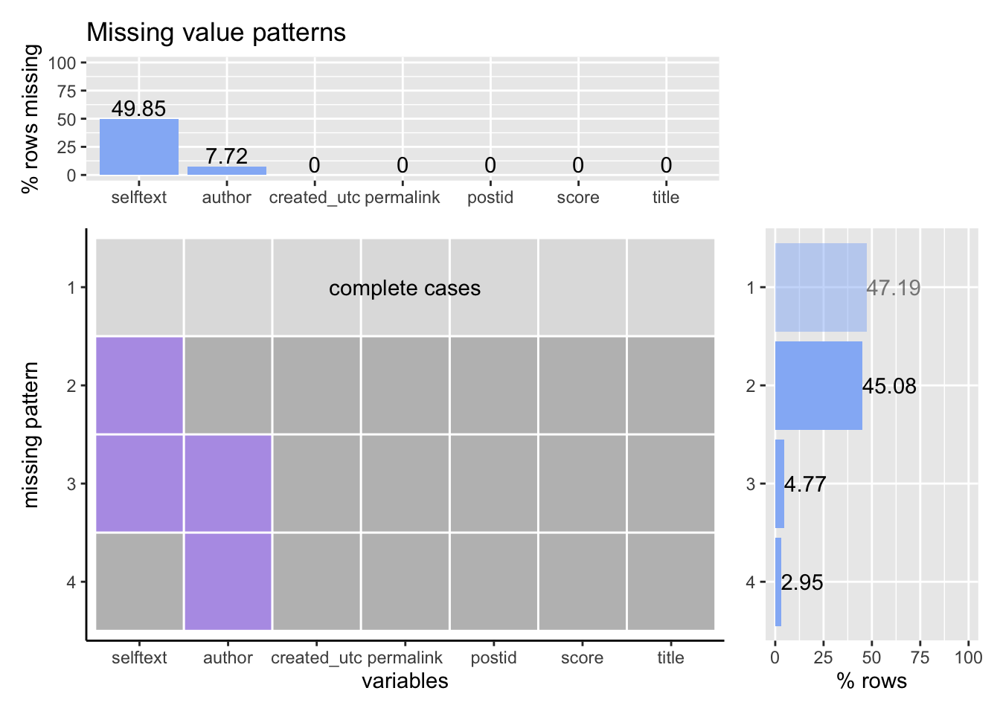
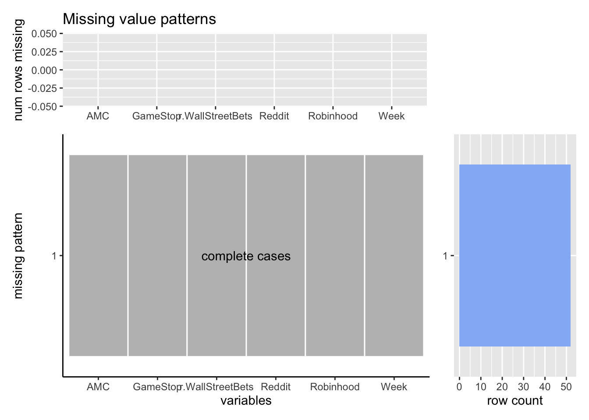
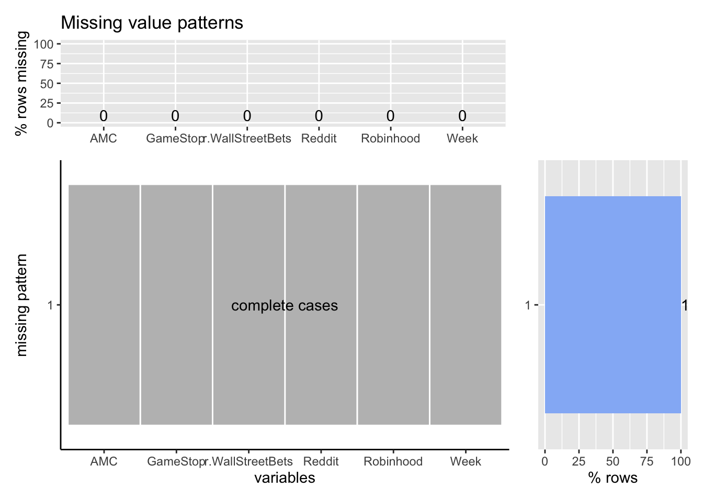

Chapter 4 Missing values
4.1 Reddit post dataset
We first create the missing values plots, both count and percent, for the reddit post dataset.

We can observe from the missing value plots that there are 4 different missing patterns, which are complete cases (47.19%), missing selftext (45.08%), missing both selftext and author (4.77%), and missing author only (2.95%). Therefore, out of the 7 variables in the dataset, only 2 variables might be missing, which are selftext and author respectively. Among the 2 variables, 49.85% of the selftext is missing while only 7.72% of the author is missing.
Looking into the selftext column in the original dataset, we noticed that there are 3 major levels that account for ~90% of the data, which are “removed”, "" and “deleted”. Consulted the reddit documents, we found that “removed” means the post is either removed by the moderators of the subreddit group or the administrator; “deleted” means the post is deleted by the content author; "" appears when a post doesn’t have body text or a post’s body contains pictures only. In this regard, we are only considering “removed” and “deleted” as NA, "“s are considered as valid inputs. About 45% of the posts are”removed", which means the level of censorship is relatively high.
## # A tibble: 88,017 × 3
## selftext count percent
## <chr> <int> <dbl>
## 1 "removed" 436413 45.1
## 2 "" 394027 40.7
## 3 "deleted" 46173 4.77
## 4 "Your daily trading discussion thread Please keep the shitpostin… 85 0.01
## 5 "Title" 72 0.01
## 6 "To the moon" 51 0.01
## 7 "Your daily trading discussion thread Please keep the shitpostin… 39 0
## 8 "AMC" 37 0
## 9 "That is all" 37 0
## 10 "TO THE MOON" 37 0
## # … with 88,007 more rowsLooking at the author column, 7.72% of the posts are missing author. We noticed that 61.76% of the posts that don’t have an author are also missing selftext.
## # A tibble: 7 × 3
## selftext count percent
## <chr> <int> <dbl>
## 1 <NA> 46172 61.8
## 2 "" 28588 38.2
## 3 "CROX are the official footwear of going to the moon nothing else … 1 0
## 4 "I think he s gone and I think he has soled all of this stocks and… 1 0
## 5 "taken from r investing full credit to OP u MasterCookSwag wanted … 1 0
## 6 "Welp down 354 today could be worse for sure Just here to say I ha… 1 0
## 7 "you should absolutely care about it and learn from it Figure out … 1 0These missing values wouldn’t impact our analysis, because we are looking at the data at the aggregate level. Our analysis only cares about the change of the count of the posts in particular period of time. Even though those posts are deleted or removed in a later time, we should still include them in our analysis.
4.2 Google Trend dataset
We created the missing values plots, both count and percent, for two Google trend datasets and found there’s no missing value in both datasets 